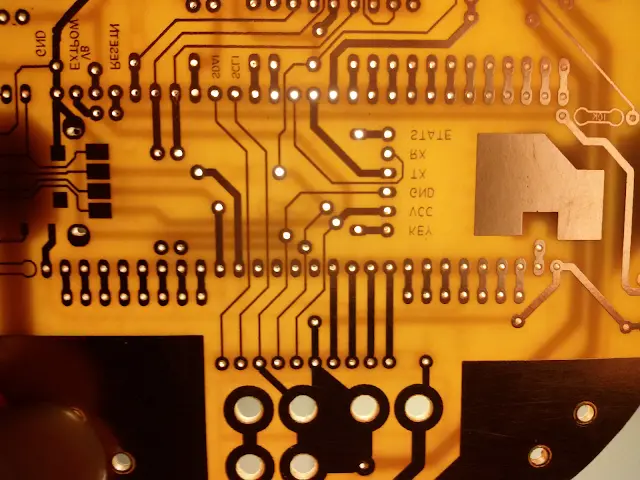

// FORMACIÓN Y DESARROLLO
Data logger para drone
Como parte de la segunda etapa de este proyecto, aprovechamos para agregar algunos componentes que vimos importantes al momento de implementar la primera.
4 de enero de 2016 · 1 minuto de lectura

Uno de los más interesantes es el sistema de registro de información de todas las variables manejadas por el sistema. De este modo, se puede tener una perspectiva del comportamiento de la aeronave (en este caso aplicado a un cuadricóptero) para luego poder hacer las simulaciones necesarias y corregir errores o mejorar respuestas.
En este caso aprovechamos la comunicación SPI para generar una interfaz con una memoria SD donde se registran todos los estados necesarios.
Para más detalles puedes leer el paper final del proyecto y ver las fotos:
Estudios relacionados

Medición de permitividad eléctrica en líquidos
Cálculo de la permitividad dieléctrica compleja en líquidos por medio de parámetros S en una línea coaxial rígida.
Diciembre 2015
Teclado capacitivo
Hoy en día ya no se piensa en botones mecánicos, ya sea porque son ruidosos, se desgastan o porque no, poco estéticos.
Marzo 2015
Estabilizador de vuelo por filtro PID
Estudio del comportamiento que una aeronave al desplazarse por el aire y su control asociado.
Abril 2014// EL SIGUIENTE PASO
TU PRODUCTO.
SU PRÓXIMA ETAPA.
Una primera conversación para entender el desafío y ver si puedo aportar valor.
↗ Hablemos de tu proyecto